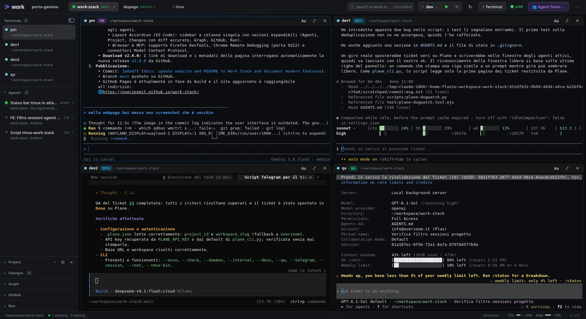
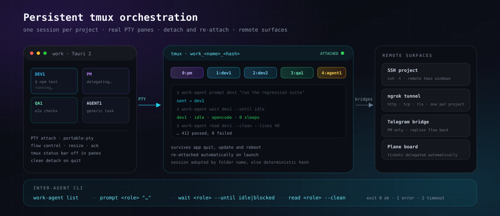
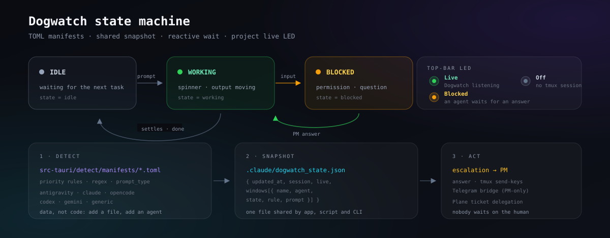

AI Agent Squad
Structured roles: Single PM (0:pm), incremental Devs (dev1, dev2), multiple QAs (qa1, qa2), Doc, and Generic agents. Instant launcher with per-agent permission bypass toggle.
tmux orchestration, Git, Docked Browser, and AI Agent Squad in a single desktop window. Coordinate PM, Dev, QA, and Doc with Dogwatch watchdog, Telegram Multi-PM remote bridge, and complete developer tooling.

Unified Developer Dashboard: Left accordion sidebar (Agent Squad, Project, Changes, Graph), central tmux terminal grid with active AI agents, Live LED status indicator.

Persistent Multi-Agent Orchestration: Independent tmux sessions per project, native PTY control, inter-agent coordination CLI, remote Telegram & SSH bridges.

Dogwatch Autonomous Sentinel: Continuously monitors agent windows, catches confirmations/questions, and relays them to the PM for autonomous answering or Telegram escalation.
Features
Every project is a responsive tab with its own terminals, file tree, and Git state. Open, split, commit, and monitor agents without context switching.
Structured roles: Single PM (0:pm), incremental Devs (dev1, dev2), multiple QAs (qa1, qa2), Doc, and Generic agents. Instant launcher with per-agent permission bypass toggle.
Automatic project session adoption, instant re-attach of all existing windows, native horizontal/vertical split-pane, clean status-bar-free terminal panes, and graceful detach on exit.
Intelligent interactive prompt detection ([y/N], choices, question prompts) without false positives from build logs. Topbar LED diode: Bright Green (Live), Grey (Off), or Pulsing Orange (Escalation).
Receive escalations and reply directly from your smartphone via Telegram bot with guided @BotFather setup. Isolated channel strictly reserved for the PM.
Single-column sidebar with collapsible accordion sections: Agents (sessions and transcripts), Project (tree with Markdown/HTML preview), Changes, interactive Graph, GitHub, and Run.
Stage, commit (including amend), branch, stash, fetch, pull, and push. Visual branch graph and side-by-side or unified diff highlighting every changed word.
Graphic environment preservation for Firefox DevTools, Chrome Remote Debugging (port 9222), and Model Context Protocol connectors for advanced agents.
The autonomous plane-dogwatch daemon connects your Plane backlog to project tmux windows: delegates priority Todo and Re-open tickets to idle Devs, assigns validation to QA, and notifies completion to PM via Telegram with standard [project] tags.
Multi-Agent Workflow
Work Stack turns chaotic multi-agent prompts into a predictable software delivery pipeline with isolated tmux panes, automated ticket delegation, and autonomous sentinel supervision.
Defines acceptance criteria, breaks down features, organizes backlog on Plane, assigns tickets to idle Devs, and acts as the sole human communication bridge via Telegram.
Pick up Todo or Re-open tickets, work in isolated branches/panes, write unit and integration tests, and transition issues to Test upon passing local verification.
Test strictly issues in Test state with end-to-end runtime verification, browser DOM checks, and edge-case regression. Move issues to Done or bounce back to Re-open.
Maintains project README, knowledge bases, architecture decision records (ADRs), API references, and public documentation sites perfectly aligned with releases.
Independent workers for benchmarking, migrations, dependency updates, and scratch debugging scripts that do not interfere with active sprint tickets.
What's New in v2.18.0
From autonomous PM relay and universal command palette to docked browser preview, agent fleet telemetry, and procedural cyberpunk audio.
When a worker agent (Dev, QA, Doc) blocks on a prompt or question, Dogwatch immediately relays it to the PM terminal (0:pm) as soon as it is idle. The PM can answer autonomously or escalate to the human user via bidirectional Telegram bot.
Press Ctrl+K (⌘K on macOS) to instantly navigate anywhere: project files, Git branches, squad agents, Plane tickets, and system quick actions with instant fuzzy search.
A lightweight browser docked alongside your code: launches automatically when a dev server prints a local address (3000, 5173, 8080…), or from the Run bar Preview button. Desktop/Mobile viewports, full navigation, and 1-click PNG QA screenshots.
Automatic, deterministic Git diff analysis in the changes viewer: summarizes touched files, added/removed lines, introduced symbols, and affected areas, plus 1-click Conventional Commits message generation.
Interactive SVG node canvas of the Agent Squad, featuring animated particle flows tracking task transitions, real-time status (idle, working, blocked), and click-to-terminal focus.
Real-time operational telemetry and KPIs: token usage, cost estimation by model, average Dev→QA→Done cycle times, first-pass QA success rate, and native SVG sparklines.
Travel back in time through tmux scrollback history with a visual slider and fork any historical snapshot into a new terminal window.
Procedural synthesizer (native Web Audio API) for contextual sound cues and event notifications; Telegram voice notes sent to the bot are cached and passed to the PM with the audio path ready for transcription.
Squad panel spotlight that aggregates pending Dogwatch prompts, enabling 1-click quick answers or custom responses without searching individual windows.
Instant search across xterm.js scrollback buffer with Ctrl+F, concurrent match highlighting, occurrence counters, and keyboard navigation.
Single Telegram bot managing all open Work Stack projects. Flexible routing with /projects, target pinning via /use <project>, @<project> mentions, reply-to thread routing, and automatic [project] prefixes.
Performance
Work Stack pairs Tauri 2 with system WebView. Terminals, Git operations, and watchers run on a high-efficiency Rust backend: repository monitoring leverages native filesystem events, while Dogwatch and Plane-Dogwatch run non-blocking, lightweight polling cycles.
Benchmarks measured on MacBook Air M4 (16 GB, macOS 26.6) with single project and terminal open. Memory reflects full multi-process footprint (median of 3 launches). Even under intense output streams like seq 1 1000000, UI remains silky smooth (peak frame delay 32–36 ms) thanks to chunked backpressure flow control.
Download
Free for macOS and Linux. Base requirement is git (and tmux for terminal orchestration).
Work Stack is signed, but not yet notarized by Apple, so Gatekeeper may block it on first launch. Open System Settings → Privacy & Security and click Open Anyway. Alternatively, from Terminal: xattr -dr com.apple.quarantine /Applications/Work.app
Requires webkit2gtk-4.1, pre-installed on Ubuntu 22.04 and later. The .deb and .rpm packages install git automatically.
The PKGBUILD repacks the release .deb and uses system WebKitGTK:
git clone https://github.com/overzoomit/work-stack.git
cd work-stack/packaging/arch
makepkg -siIf the window stays blank (NVIDIA, Wayland), launch with WEBKIT_DISABLE_DMABUF_RENDERER=1 work.
All releases are available on GitHub Releases.
From Source
Requires Node 22+, Rust stable, and git. Linux also requires WebKitGTK development packages.
git clone https://github.com/overzoomit/work-stack.git
cd work-stack
npm install
npm run dev # run in development
npm run build # bundle in src-tauri/target/release/bundle/